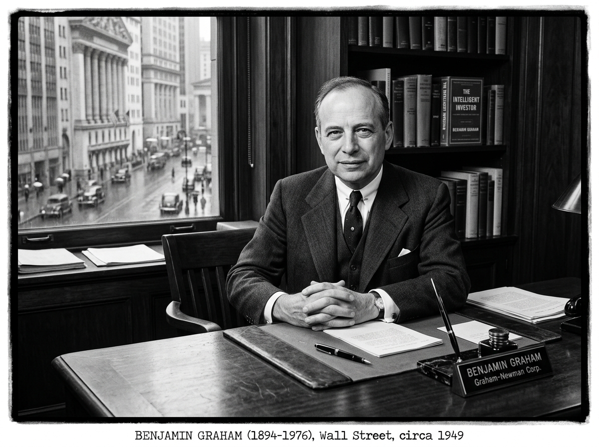
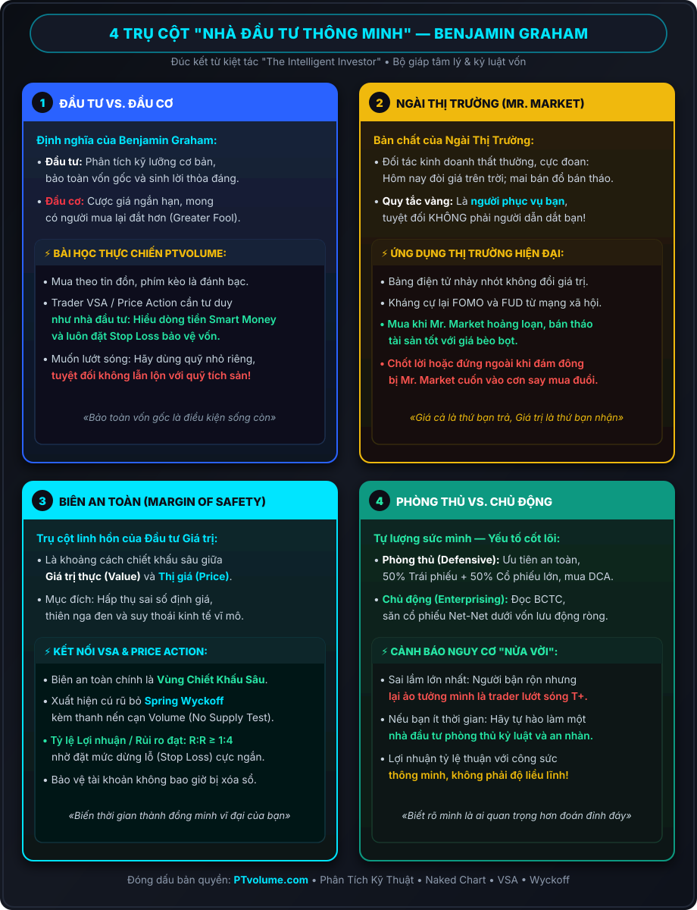
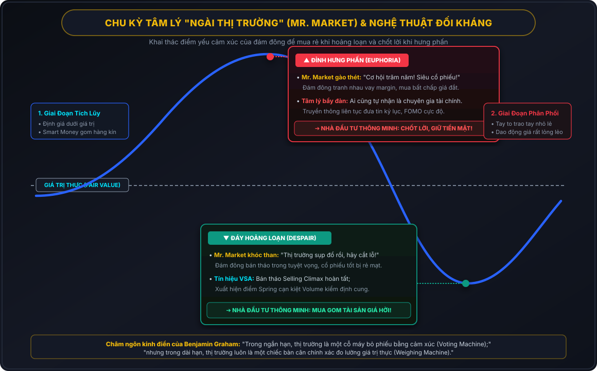
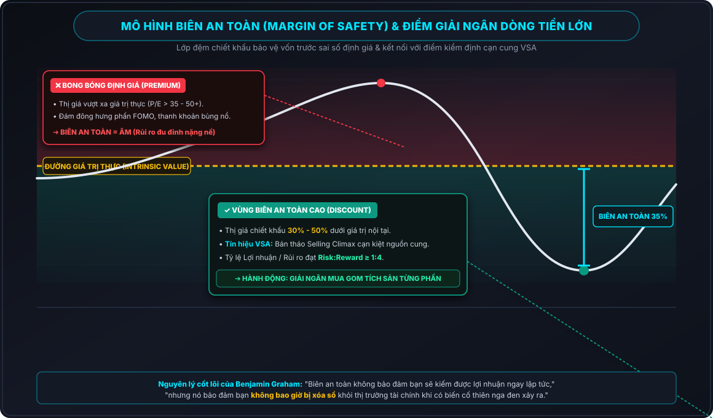
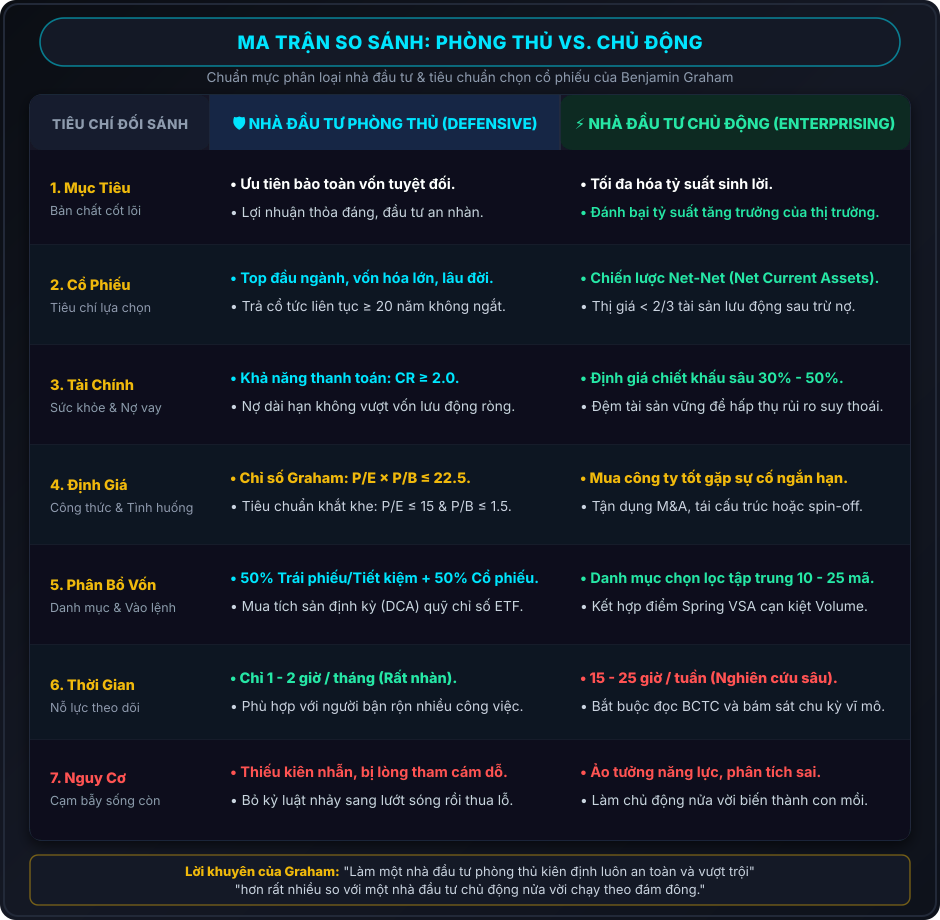

"Để đạt được thành công bền vững trong đầu tư, bạn không cần một chỉ số IQ thiên tài hay những thông tin nội gián bất thường. Bạn cần một khung tư duy trí tuệ đúng đắn để đưa ra quyết định và một năng lực cảm xúc vững vàng để ngăn chặn những cảm xúc ấy làm xói mòn khung tư duy của mình."
— Warren Buffett (Nhận xét về cuốn sách trong lời tựa lần tái bản thứ tư)
Nếu coi thị trường tài chính là một đại dương đầy bão tố, nơi lòng tham và nỗi sợ hãi liên tục nhấn chìm các thế hệ giao dịch, thì cuốn sách «Nhà đầu tư thông minh» (The Intelligent Investor) của Benjamin Graham chính là ngọn hải đăng vững chãi nhất từng được dựng lên. Xuất bản lần đầu vào năm 1949, tác phẩm đã đặt nền móng khai sinh cho toàn bộ trường phái Đầu tư giá trị (Value Investing) và định hình tư duy của những bộ óc vĩ đại nhất lịch sử Phố Wall, tiêu biểu là Warren Buffett, Charlie Munger và Walter Schloss.

Không dạy bạn cách phỏng đoán giá ngày mai tăng hay giảm, cũng không đưa ra những bí kíp "làm giàu siêu tốc", Benjamin Graham trang bị cho độc giả một bộ giáp phòng thủ tâm lý, một thước đo định lượng khắt khe và quy tắc Biên An Toàn (Margin of Safety) sinh tử. Dù bạn là một nhà đầu tư cổ phiếu dài hạn, một trader theo trường phái Naked Chart, Price Action hay Volume Spread Analysis (VSA), những nguyên lý của Graham vẫn là kim chỉ nam tối thượng để bảo toàn vốn gốc và tồn tại bền vững qua mọi chu kỳ sụp đổ của thị trường.

Phần 1: Phân Biệt Rạch Ròi — Đầu Tư (Investment) vs. Đầu Cơ (Speculation)
Mở đầu tác phẩm, Graham cảnh báo sai lầm chết người phổ biến nhất trên sàn chứng khoán: người tham gia thị trường nhầm tưởng mình đang đầu tư, nhưng thực chất đang đánh bạc đầu cơ.
Graham định nghĩa một cách mẫu mực và chặt chẽ:
"Một hoạt động đầu tư là hoạt động thông qua việc phân tích kỹ lưỡng các yếu tố cơ bản, hứa hẹn bảo toàn vốn gốc và mang lại một tỷ suất sinh lời thỏa đáng. Các hoạt động không đáp ứng được những tiêu chuẩn này là hoạt động đầu cơ."
Để một hành động được gọi là Đầu tư chân chính, nó phải thỏa mãn đồng thời 3 điều kiện tiên quyết:
- Phân tích kỹ lưỡng (Thorough Analysis): Xem xét toàn diện báo cáo tài chính, tài sản ròng, dòng tiền, bảng cân đối kế toán và triển vọng kinh doanh theo các nguyên tắc an toàn khách quan.
- Bảo toàn vốn gốc (Safety of Principal): Khoản vốn giải ngân phải được bảo vệ trước các kịch bản bất lợi hoặc suy thoái kinh tế. Khả năng mất trắng vốn gần như bằng không.
- Tỷ suất sinh lời thỏa đáng (Adequate Return): Mức lợi nhuận kỳ vọng hợp lý, thực tế, phản ánh kết quả kinh doanh của doanh nghiệp chứ không phải dựa trên sự điên cuồng của đám đông.
Góc Nhìn Thực Chiến PTvolume Về Đầu Cơ:
- Đầu cơ không phải là tội lỗi: Graham thừa nhận đầu cơ luôn tồn tại và cần thiết cho thanh khoản thị trường. Tuy nhiên, nguy hiểm chí mạng là khi bạn *tưởng mình đang đầu tư* trong khi thực chất đang đánh cược theo tin đồn, đội lái hoặc đu đỉnh các nhóm Telegram, hội nhóm mạng xã hội.
- Nguyên tắc tách biệt tài khoản: Nếu muốn tham gia đầu cơ lướt sóng ngắn hạn hoặc trading đòn bẩy cao, hãy trích một quỹ nhỏ riêng biệt (tối đa 5-10% tổng tài sản ròng). Tuyệt đối không bao giờ rút vốn từ tài khoản đầu tư dài hạn để bù lỗ cho các lệnh đầu cơ.
- Trader chuyên nghiệp tư duy như Nhà đầu tư: Ngay cả khi giao dịch phái sinh hay vàng, dầu, crypto theo phương pháp VSA / Wyckoff, một trader thông minh luôn đặt bảo toàn vốn (Risk Management) lên trên hết thông qua việc xác định Stop Loss chặt chẽ và chỉ vào lệnh khi có điểm xác nhận cạn kiệt nguồn cung.
Phần 2: Phúng Dụ Kinh Điển Về "Ngài Thị Trường" (Mr. Market)
Tại Chương 8 — một trong hai chương mà Warren Buffett khuyên mọi nhà đầu tư phải đọc đi đọc lại suốt cuộc đời, Graham giới thiệu câu chuyện ngụ ngôn thiên tài về "Ngài Thị Trường" (Mr. Market).
Hãy hình dung bạn và Mr. Market cùng sở hữu một doanh nghiệp tư nhân. Mỗi ngày, không bao giờ vắng mặt, Mr. Market đều tìm đến bạn và đưa ra một mức giá cụ thể để mua lại phần sở hữu của bạn hoặc bán thêm cổ phần của ông ta cho bạn. Vấn đề nằm ở chỗ: Mr. Market mắc chứng rối loạn cảm xúc cực độ:
- Khi hưng phấn tột đỉnh: Ông ta nhìn thấy tương lai rực rỡ một cách vô lý, chỉ nhìn thấy cơ hội và đưa ra mức giá cao chót vót trên trời.
- Khi suy sụp bi quan: Ông ta sợ hãi ngày tận thế, nhìn đâu cũng thấy rủi ro và sẵn sàng bán tống bán tháo cổ phần với mức giá rẻ như cho không.

Thông điệp bất hủ mà Benjamin Graham gửi gắm chính là:
"Ngài Thị Trường là người phục vụ bạn, không phải người chỉ đạo bạn. Chính sự thất thường và ngốc nghếch trong túi tiền của ông ta mang lại cơ hội cho bạn, chứ không phải sự khôn ngoan của ông ta."
Nếu bạn bị thôi miên bởi bảng điện tử nhảy nhót mỗi ngày, bạn sẽ vô tình biến Mr. Market thành người chủ điều khiển cảm xúc của mình. Khi thị trường giảm 30%, bạn hoảng loạn bán tháo; khi thị trường tăng nóng 50%, bạn hưng phấn vay margin mua đuổi. Đó là con đường tự sát tài chính. Nhà đầu tư thông minh chỉ giao dịch với Mr. Market khi mức giá ông ta đưa ra đem lại lợi thế không thể chối từ: mua khi ông ta tuyệt vọng và bán khi ông ta cuồng dại.
Phần 3: Trụ Cột Sinh Tử — "Biên An Toàn" (Margin of Safety)
Tại Chương 20, Graham đúc kết bí quyết thành công của toàn bộ sự nghiệp đầu tư gói gọn trong ba từ: BIÊN AN TOÀN (Margin of Safety).
Trong kỹ thuật xây dựng, khi các kỹ sư thiết kế một cây cầu cho phép xe tải 10 tấn chạy qua, họ luôn xây cây cầu có khả năng chịu tải 30 tấn để dự phòng cho các tình huống quá tải bất thường hoặc vật liệu xuống cấp theo thời gian. Đó chính là Biên an toàn.
Trong đầu tư tài chính, Biên An Toàn là khoảng cách chiết khấu giữa Giá Trị Nội Tại (Intrinsic Value) và Thị Giá (Market Price):
Biên An Toàn = Giá Trị Thực (Intrinsic Value) - Giá Thị Trường (Market Price)

Vì sao Biên An Toàn là nguyên tắc sống còn?
- Không ai có khả năng dự đoán chính xác tương lai: Dù bạn dùng mô hình định giá dòng tiền chiết khấu (DCF) hay phân tích phức tạp đến đâu, tương lai luôn đầy rẫy biến số: chiến tranh, lạm phát, dịch bệnh, thay đổi chính sách. Biên an toàn bảo đảm rằng ngay cả khi dự báo lợi nhuận của bạn bị sai lệch 30%, bạn vẫn không bị thua lỗ vốn gốc.
- Hấp thụ sai số định giá: Giá trị nội tại không phải một con số cố định tuyệt đối, mà là một khoảng ước lượng (Range). Mua một tài sản trị giá 100.000đ với giá 60.000đ sẽ cho bạn một biên đệm an toàn 40% để chống chọi với mọi cơn bão.
- Đòn bẩy sinh lời cực đại: Khi mua ở mức chiết khấu sâu, bạn vừa được bảo vệ trước đà giảm, vừa sở hữu tiềm năng tăng giá khổng lồ khi thị trường bình tâm trở lại và thị giá quay về đúng giá trị thực.
Kết Nối Triết Lý Biên An Toàn Với Phân Tích Kỹ Thuật (VSA & Price Action):
Nhiều người lầm tưởng trường phái Đầu tư Giá trị của Graham hoàn toàn tách biệt với Phân tích Kỹ thuật. Thực tế, tại PTvolume, chúng tôi kết nối hai phương pháp này thành một hệ thống đồng nhất:
- Vùng Chiết Khấu Sâu (Discount Zone): Khi cổ phiếu của doanh nghiệp đầu ngành sụt giảm mạnh về vùng hỗ trợ nhiều năm (Support Level) do tâm lý hoảng loạn chung, đây là lúc Biên an toàn đạt giá trị cao nhất.
- Xác nhận hành vi Smart Money bằng VSA: Đừng vội bắt dao rơi khi khối lượng bán tháo còn cuồn cuộn. Điểm mua hoàn hảo có Biên an toàn tối thượng xuất hiện khi biểu đồ hình thành cú rũ bỏ giả Wyckoff Spring kèm thanh nến kiểm định cạn kiệt thanh khoản (No Supply Test / Volume Dry-up).
- Tỷ lệ Risk:Reward (R:R) bất đối xứng: Điểm mua tại vùng cạn cung cho phép đặt mức dừng lỗ (Stop Loss) cực ngắn ngay dưới đáy swing low, tạo nên một tỷ lệ Risk:Reward lý tưởng từ 1:4 đến 1:6.
Phần 4: Hai Trường Phái Nhà Đầu Tư — Phòng Thủ (Defensive) vs. Chủ Động (Enterprising)
Benjamin Graham không chia nhà đầu tư theo độ tuổi hay mức độ chấp nhận rủi ro, mà chia theo thời gian, nỗ lực và năng lực trí tuệ sẵn sàng cống hiến cho hoạt động đầu tư.

1. Nhà Đầu Tư Phòng Thủ (The Defensive / Passive Investor)
Đây là nhóm người không có chuyên môn sâu về tài chính hoặc không muốn dành hàng chục giờ mỗi tuần để nghiên cứu báo cáo doanh nghiệp. Mục tiêu hàng đầu của họ là: sự an toàn, đơn giản, tránh xa căng thẳng và đạt tỷ suất sinh lời thỏa đáng tương đương mức tăng trưởng trung bình của nền kinh tế.
Chiến lược của Nhà đầu tư phòng thủ:
- Phân bổ tài sản cân bằng (50/50 Rule): Luôn giữ danh mục gồm 50% Trái phiếu / Tiết kiệm chất lượng cao và 50% Cổ phiếu lớn hàng đầu. Tỷ lệ này có thể điều chỉnh linh hoạt từ 25% đến 75% tùy theo thị trường đang ở vùng định giá quá đắt hay quá rẻ.
- Đầu tư định kỳ (Dollar-Cost Averaging - DCA): Giải ngân đều đặn một số tiền cố định mỗi tháng vào quỹ chỉ số (như S&P 500, VN30) bất chấp thị trường đang lên hay xuống.
- Tiêu chuẩn 5 bước chọn cổ phiếu phòng thủ của Graham:
- Quy mô doanh nghiệp đủ lớn, thuộc top đầu ngành.
- Tình hình tài chính lành mạnh: Tỷ số thanh toán hiện hành (Current Ratio) ≥ 2.0; Nợ dài hạn không vượt quá tài sản lưu động ròng.
- Lịch sử chi trả cổ tức liên tục không gián đoạn trong ít nhất 20 năm.
- Lợi nhuận EPS tăng trưởng dương đều đặn trong 10 năm gần nhất, không có năm nào lỗ.
- Định giá rẻ: P/E ≤ 15 và P/B ≤ 1.5 (Tích số P/E × P/B ≤ 22.5 - Công thức Graham Number).
2. Nhà Đầu Tư Chủ Động / Năng Động (The Enterprising / Active Investor)
Là những người sẵn sàng cống hiến toàn bộ tâm sức, coi đầu tư là một nghề kinh doanh thực thụ. Mục tiêu của họ là đánh bại chỉ số thị trường bằng việc tìm kiếm các tài sản bị định giá sai lệch nghiêm trọng.
Chiến lược của Nhà đầu tư chủ động:
- Chiến lược Net-Net (Net Current Asset Value - NCAV): Mua các công ty có thị giá thấp hơn 2/3 (66%) giá trị tài sản lưu động ròng sau khi đã trừ đi TOÀN BỘ nợ phải trả. Đây là chiến lược "mua doanh nghiệp với giá rẻ hơn tiền mặt trong két sắt" đã mang lại lợi nhuận phi thường cho Graham trong thời kỳ Đại khủng hoảng.
- Tình huống đặc biệt (Special Situations / Arbitrage): Khai thác các thương vụ mua bán sáp nhập (M&A), tái cấu trúc tài chính, chia tách công ty hoặc giải thể phá sản.
- Mua cổ phiếu doanh nghiệp lớn gặp biến cố tạm thời: Khi một tập đoàn đầu ngành gặp một sự cố ngắn hạn không làm ảnh hưởng đến năng lực cạnh tranh cốt lõi, giá cổ phiếu bị bán tháo quá mức chính là cơ hội vàng để gom hàng.
| Tiêu Chí So Sánh | Nhà Đầu Tư Phòng Thủ (Defensive) | Nhà Đầu Tư Chủ Động (Enterprising) |
|---|---|---|
| Thời gian & Nỗ lực | Rất ít (1 - 2 giờ / tháng kiểm tra danh mục) | Rất nhiều (15 - 30 giờ / tuần nghiên cứu BCTC) |
| Chiến lược cốt lõi | Quỹ chỉ số ETF, Cổ phiếu Blue-chip cổ tức, DCA | Chiến lược Net-Net, Special Situations, Chiết khấu sâu |
| Tỷ lệ P/E & P/B | P/E < 15, P/B < 1.5 (P/E × P/B ≤ 22.5) | Thị giá < 2/3 Tài sản lưu động ròng (NCAV) |
| Số lượng cổ phiếu | 10 - 30 cổ phiếu đầu ngành hoặc Quỹ ETF | 10 - 25 cổ phiếu được sàng lọc cực kỳ khắt khe |
| Kỳ vọng lợi nhuận | Bằng hoặc sát mức trung bình thị trường (8-12%/năm) | Vượt trội so với thị trường (15-25%+/năm) |
| Nguy cơ lớn nhất | Bị cám dỗ từ bỏ kỷ luật để nhảy sang đầu cơ lướt sóng | Tự tin thái quá, phân tích sai hoặc thiếu thanh khoản |
Phần 5: 10 Bài Học Đúc Kết Xương Máu Từ Cuốn Sách
- Đầu tư thành công là cuộc chiến quản trị cảm xúc, không phải so đo IQ: Những người thông minh nhất thường thất bại trên thị trường vì họ không kiềm chế được lòng tham khi thấy bạn bè kiếm tiền dễ dàng, và không kiểm soát được sự hoảng loạn khi tài khoản giảm giá. Kỷ luật cảm xúc vượt trội hơn trí thông minh hàn lâm.
- Giá cả là thứ bạn trả, Giá trị là thứ bạn nhận: Đừng bao giờ đánh đồng biến động thị giá trên bảng điện tử với giá trị nội tại của doanh nghiệp. Giá cả do tâm lý bầy đàn quyết định trong ngắn hạn, nhưng giá trị được quyết định bởi tài sản, doanh thu và dòng tiền thực tế.
- Đừng bao giờ để Ngài Thị Trường dẫn dắt bạn: Hãy học cách nhìn nhận sự sụt giảm của thị trường như một đợt "đại hạ giá" tại siêu thị. Nếu một món đồ chất lượng cao giảm giá 40%, bạn sẽ vui mừng mua vào hay sợ hãi bỏ chạy?
- Biên An Toàn là tấm khiên sinh tồn: Luôn giải ngân với mức chiết khấu đủ lớn để dù bạn tính toán sai, doanh nghiệp gặp biến cố hay thị trường suy thoái, vốn gốc của bạn vẫn được bảo vệ an toàn.
- Không bao giờ gộp chung tư duy Đầu tư và Đầu cơ: Lẫn lộn giữa hai hình thái này là con đường ngắn nhất dẫn đến phá sản. Nếu muốn đầu cơ, hãy dùng một tài khoản riêng với số tiền bạn sẵn sàng mất hết mà không ảnh hưởng đến cuộc sống gia đình.
- Sức mạnh vô song của Phân bổ tài sản (Asset Allocation): Việc chia tiền giữa Cổ phiếu và Trái phiếu / Tiền mặt giúp bạn luôn có một dòng thu nhập ổn định và sẵn sàng nguồn tiền mặt dồi dào để "bắt đáy" khi khủng hoảng xảy ra.
- Kỷ luật tái cân bằng (Rebalancing): Khi thị trường tăng quá nóng và tỷ trọng cổ phiếu vọt lên 75-80%, hãy chủ động chốt lời một phần để chuyển sang trái phiếu/tiền mặt. Ngược lại, khi thị trường sụp đổ khiến cổ phiếu giảm còn 25%, hãy rút tiền mặt ra mua thêm cổ phiếu giá rẻ.
- Tích sản định kỳ (DCA) là vũ khí tối thượng của người bận rộn: Mua đều đặn hàng tháng vào quỹ chỉ số giúp bạn tự động mua được nhiều cổ phiếu hơn khi giá rẻ và mua ít hơn khi giá đắt mà không cần phải đoán đỉnh đoán đáy.
- Tránh xa các cổ phiếu "tăng trưởng nóng" đang được ca tụng: Graham cảnh báo rằng những công ty có tốc độ tăng trưởng phi thường thường bị thị trường định giá quá cao (P/E 50, 100). Khi sự tăng trưởng này chỉ cần chậm lại một chút, thị giá sẽ sụp đổ thảm khốc.
- Thành thật với bản thân về thời gian và năng lực: Nếu bạn không thể dành 20 giờ mỗi tuần để soi báo cáo tài chính, hãy tự hào làm một Nhà đầu tư phòng thủ xuất sắc. Cố làm nhà đầu tư chủ động nửa vời sẽ biến bạn thành con mồi béo bở cho dòng tiền lớn (Smart Money).
Tổng Kết
Trải qua hơn 7 thập kỷ với vô số cuộc khủng hoảng tài chính, từ bong bóng Dot-com năm 2000, khủng hoảng thế chấp dưới chuẩn 2008, cho đến đại dịch 2020 và các đợt biến động dữ dội của kỷ nguyên Crypto & Trí tuệ Nhân tạo hiện nay, những chân lý trong «Nhà đầu tư thông minh» chưa từng lỗi thời.
Bản chất con người không bao giờ thay đổi: lòng tham và nỗi sợ hãi sẽ luôn luân phiên thống trị thị trường. Người chiến thắng sau cùng không phải là người thông minh nhất hay người dự báo chuẩn xác nhất, mà là người có kỷ luật thép, luôn kiên định với Biên An Toàn và biết cách biến sự điên rồ của Ngài Thị Trường thành lợi thế vĩnh cửu cho chính mình.
Thảo Luận Kỹ Thuật & Góc Nhìn Độc Giả (2)